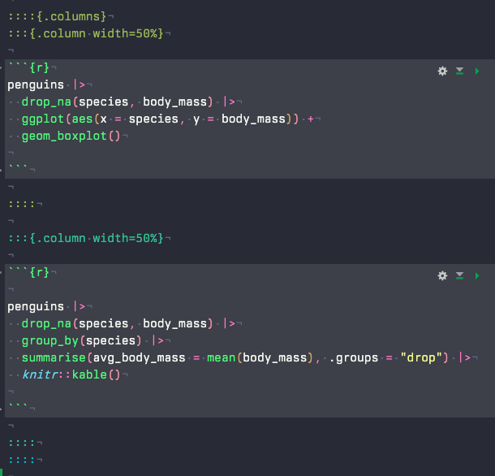
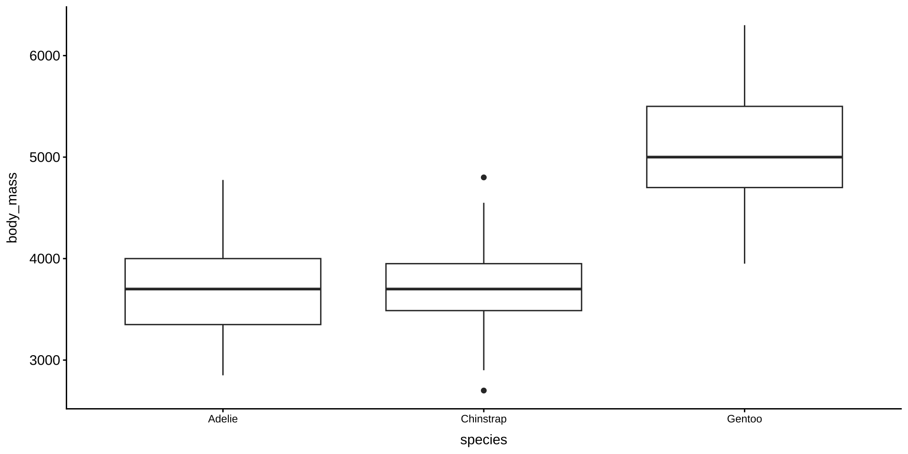

![]()
df <-
penguins |>
drop_na(species, sex, body_mass) |>
group_by(species, sex) |>
summarise(avg_body_mass = mean(body_mass), .groups = "drop")
# csvで書き出す
write_csv(df, "data/penguins_avg_body_mass.csv")RとQuartoではじめるデータサイエンス
#7 テーブル
0. 本日の目標
本日の目標
- データをcsvで書き出せるようになる
- 集計表・クロス集計表を作ってみる
- 検定・回帰分析に触れてみる
Ⅰ. 前回の振り返り
授業の感想
私は全国の家計のデータを都道府県別に出力したいと思っていますが、表のほうが見やすいのか地図のほうが見やすいのか吟味しなければいけないと思ったからです。（楠さん）
グラフを作るためのコードは教えてもらっていたが、見やすいグラフをつくための軸の表記や色、文字などは別のコードやパッケージをダウンロードをする必要があるので、難しいと感じた。（山田さん）
前回の積み残し
訂正
- row_data → raw_data
row_dataのままでも動きますが、英語が間違っていて気持ち悪いという人は修正下さい
前回の積み残し
- Ⅱ. 行結合から
Ⅱ. テーブル
データの書き出し
write_csv()関数
- Rで加工したデータを他のアプリケーション（例：Microsoft Excel）でも利用したい場合など
- データフレームや計算結果を代入して、
write_csv()に渡す
テーブル出力関数
- 複数のパッケージ・関数が乱立
テーブル出力関数
-
gt(): 得意な出力形態：HTML- 公式サイト: install.packages(“gt”) / library(gt)
-
kable(): 得意な出力形態：HTML / Word / PDF / pptx 全般- 公式サイト: install.packages(“knitr”) / library(knitr)
-
flextable(): 得意な出力形態：Word・pptx- 公式サイト: install.packages(“flextable”) / library(flextable)
-
tt(): 得意な出力形態：PDF- 公式サイト: install.packages(“tinytable”) / library(tinytable)
集計表
tabyl()関数（公式サイト）
- 公式サイト；install.packages(“janitor”) / library(janitor)
- データをきれいに整理するためのRパッケージ
1変数集計
penguins |>
drop_na() |>
tabyl(species) |> # 件数表の作成
adorn_pct_formatting() |> # 割合を%表記にする
knitr::kable()| species | n | percent |
|---|---|---|
| Adelie | 146 | 43.8% |
| Chinstrap | 68 | 20.4% |
| Gentoo | 119 | 35.7% |
クロス集計表
tabyl()関数
2変数集計＝クロス集計表
penguins |>
drop_na() |>
tabyl(species, island) |> # 2変数を指定
adorn_percentages("row") |> # 各行を100%にする割合表："raw"＝行方向に集計
adorn_pct_formatting(digits = 2) |>
adorn_ns() |> # 元の件数nを括弧付きで追加
knitr::kable()| species | Biscoe | Dream | Torgersen |
|---|---|---|---|
| Adelie | 30.14% (44) | 37.67% (55) | 32.19% (47) |
| Chinstrap | 0.00% (0) | 100.00% (68) | 0.00% (0) |
| Gentoo | 100.00% (119) | 0.00% (0) | 0.00% (0) |
クロス集計
段組

::::{.columns}
:::{.column width=50%}
::::
:::{.column width=50%}
::::
::::
クロス集計 > 段組

| species | avg_body_mass |
|---|---|
| Adelie | 3700.662 |
| Chinstrap | 3733.088 |
| Gentoo | 5076.016 |
Ⅲ. 統計分析
検定
カイ二乗検定
- クロス集計表を作り、変数間の値の違いが偶然かどうかを調べる
- 例：ペンギンの種類と島に関係はあるのか
以下のコードが動かない場合、次のページのコードを試して下さい
penguins |>
drop_na() |>
tabyl(species, island) |> # 種類×島の件数表
chisq.test() # 種類と島に関連があるかを検定
Pearson's Chi-squared test
data: tabyl(drop_na(penguins), species, island)
X-squared = 284.59, df = 4, p-value < 2.2e-16検定
カイ二乗検定
penguins |>
drop_na(species, island) |>
with(table(species, island)) |>
stats::chisq.test()
Pearson's Chi-squared test
data: with(drop_na(penguins, species, island), table(species, island))
X-squared = 299.55, df = 4, p-value < 2.2e-16検定
カイ二乗検定
- 仮説「ペンギンの種類と島は無関係」を検定
結果の読み取り方
- X-squared = 284.59：「期待される分布」から大きくずれ、大きな偏りがあることを示す
- p-value < 2.2e-16：偶然だけでこの偏りが起こる確率はほぼゼロ
- 2.2e-16（指数表記） = 2.2かける10のマイナス16乗 = 0.00000000000000022
一般に、p値が0.05以下であれば「偶然だけでは説明しにくい差や関係がある」と判断することが多い
クロス集計と検定
tbl_summary()関数
- 公式サイト；install.packages(“gtsummary”) / library(gtsummary)
penguins |>
select(species, sex, body_mass) |>
drop_na() |>
tbl_summary(by = species) |>
add_p() |>
as_kable() # pptxなどで出力する場合はas_flex_table()| Characteristic | Adelie N = 146 | Chinstrap N = 68 | Gentoo N = 119 | p-value |
|---|---|---|---|---|
| sex | >0.9 | |||
| female | 73 (50%) | 34 (50%) | 58 (49%) | |
| male | 73 (50%) | 34 (50%) | 61 (51%) | |
| body_mass | 3,700 (3,350, 4,000) | 3,700 (3,475, 3,950) | 5,050 (4,700, 5,500) | <0.001 |
回帰
単回帰分析
- 被説明変数： ~ の左側；説明変数： ~ の右側
- 例：くちばしが長いペンギンほど体重も重いかを調べる
penguins |>
select(body_mass, bill_len) |> # 必要な変数に絞る
drop_na() |>
lm(body_mass ~ bill_len, data = _) # 被説明変数、説明変数を指定。 data = _は「直前のデータを使う」の意
Call:
lm(formula = body_mass ~ bill_len, data = drop_na(select(penguins,
body_mass, bill_len)))
Coefficients:
(Intercept) bill_len
362.31 87.42 回帰
結果の読み取り方
- body_mass = 362.31 + 87.42 * bill_len
- 87.42：説明変数 bill_len の係数
- くちばしが1mm 長いと、体重が平均で約87g増える
- 362.31：くちばし長が 0 mm のときの予測体重（切片）
- 計算上のスタート地点
回帰
重回帰分析
- 複数の説明変数を挙げ、被説明変数に対して、より説明力のある変数を特定する
- 方法：単回帰分析のコードに、説明変数を
+を付けて足す
penguins |>
select(body_mass, bill_len, flipper_len) |>
drop_na() |>
lm(body_mass ~ bill_len + flipper_len, data = _)
Call:
lm(formula = body_mass ~ bill_len + flipper_len, data = drop_na(select(penguins,
body_mass, bill_len, flipper_len)))
Coefficients:
(Intercept) bill_len flipper_len
-5736.897 6.047 48.145 回帰
結果の読み取り方
- 翼長が同じなら、くちばし長が1mm長いペンギンは、体重が平均で約6g重い傾向あり
- くちばし長が同じなら、翼長が1mm長いペンギンは、体重が平均で約48g重い傾向あり
- 翼長の方が体重との関係が大きい可能性あり
Ⅶ. 次回の授業と宿題
次回の授業と宿題
次回：6月3日（水）
プレゼンテーション
- プレゼンテーション
- グループディスカッション
- 自作関数
- ループ処理
次回の授業と宿題
授業の感想
- 回答先：Google Forms
- 締め切り：5月29日（金）23時59分
レポート課題
- ファイル：ZIPファイル
- ファイル名：どこかに氏名を特定できる文字を入れて下さい
- 例：kariya.zip
- 提出先：dropbox
- 締め切り：6月3日（水）10時30分